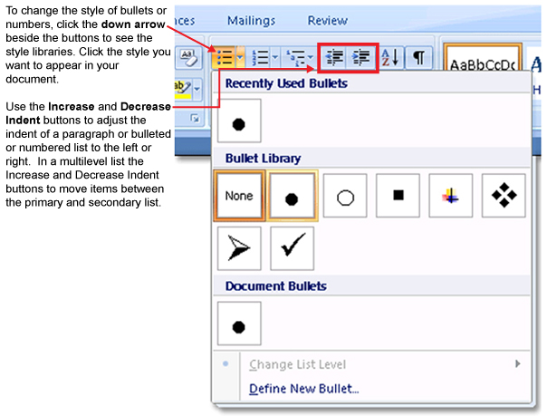

Training Room 3—Graphics
Bullets, Numbering, and Multilevel Lists
Bullets, numbers, and multilevel lists are used to organize and highlight key information in point form so it is easy to understand and remember. A multilevel list is a list that has indented subcategories, also known as a nested list.

Microsoft product screen shot(s) reprinted with permission from Microsoft Corporation.
Bulleted List Example
Lemonade Sale Supplies
- Lemons
- Sugar
- Water
- Cups
- Pitcher
- Table
- Chair
- Poster
Numbered List Example
Lemonade Sale Supplies
- Lemons
- Sugar
- Water
- Cups
- Pitcher
- Table
- Chair
- Poster
Multilevel List Example
Lemonade Sale Supplies
- Grocery Store
- Lemons
- Sugar
- Water
- Cups
- Items from Home
- Pitcher
- Table
- Chair
- Poster
Bullets, Numbering, and Multilevel list buttons are located on the Home tab on the Ribbon. There are a few ways you can add bullets and numbers to your document
- Click the Bullets or Numbering button and type your text. Each time you press Enter, another bullet or number will be added.
- Click on the text you have already typed, click on the Bullets or Numbering buttons.
- Start bullets by typing an asterisk ( * ) and then the Tab or Space key. Each time you press Enter, another bullet will be added.
- Start numbering by typing “1.” Then hit the Tab key or the Space key. Each time you press Enter, the next number will be added.
To see how bulleted and numbered lists are created in a document, go to the Instructional Videos and select “The Bulleted and Numbered List Feature.”

Microsoft product screen shot(s) reprinted with permission from Microsoft Corporation.
To learn how to create a multilevel list, go to the Instructional Videos and select “The Multilevel List Feature.”
Creating a Poster
When you create a poster or a display, you need to draw attention to a message. To begin, focus on an element that will capture a passerby’s eye and draw them in to your poster (a word, a picture, or even a colour). Once you have the reader’s attention, focus on a clear, concise message that delivers your key points. Avoid excessive text, which can overwhelm, confuse, and disinterest the reader.
Designing a Poster or Display
When we first learn to read, we are taught to start at the top left corner of the page and move right. Our eyes are trained to follow a Z pattern, starting at the optical center (the upper-left corner of the page). Knowing how your eye scans a page will help you decide where to place your text and graphics. Think of what you want your reader to see first, consider how the eye scans the page and makes connections between the graphics and the text, and decide what you want the reader to remember as they finish looking at the page. A good place for business logos and contact information is in the bottom-right corner of the page.
Effective use of white space (blank space with no text or graphics) can highlight information, as well as provide a clean look.
Using graphics is one of the most effective ways to create an interesting display. You know the saying “A picture is worth a thousand words”? Be discerning and choose just the right graphic. Use the Insert tab, Illustrations group to add clip art or pictures saved from the internet, your digital camera, or a scanner.
Text should be large enough to read at a distance — if your readers can’t read the text quickly as they walk by, your poster won’t get a second look. Sans serif fonts, such as Arial and Helvetica, are easier to read than serif fonts, such as Times New Roman, because the letters of the fonts don’t have the “serifs” — hooks or end strokes — that characterize serif fonts. (If you have taken any French courses, remember that sans means without, so sans serif means without the hooks or end strokes.) Use only one or two font styles for a more consistent look, and adjust the spacing between the text to make it easier to read.
Use capital letters, bold, italics, colour, and lines to highlight the main points of your poster, but use these features carefully—over-formatting a document makes it difficult for your audience to pick out what is important.
Bullets and numbers make information stand out, drawing the eye to each bullet or number marker in the text.
Now watch a series of video demonstrations to learn how to use Microsoft Word 2007 software features to create a poster.
Go to the Instructional Videos and select “WordArt.” Here, you will learn how to both insert and format WordArt.
Go to the Instructional Videos and select “Insert Text box.” After you've watched that demonstration, select “Insert Text box part 2.” These videos will teach you how to insert a text box, format the text, change the font (style, size, colour, bold, italic), and change the case features of Microsoft Word 2007.
To learn how to insert and format graphics in your documents, go to the Instructional Videos. Select “Inserting Graphics” to view a demonstration.
To create a visually appealing document, you may need to move and adjust the size of objects on your page. To learn how, go to the Instructional Videos and select “Adjusting Graphics.”